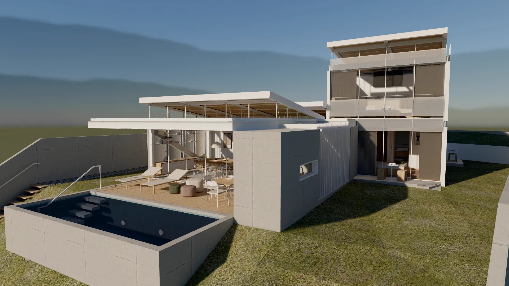

Entender o espaço acelera a decisão.
A experiência interativa leva o cliente para dentro do projeto: ele chega pela rua, atravessa o deck, mede o pé-direito do estar e sobe ao último pavimento, no próprio ritmo.

O que a experiência entrega
Fidelidade ao projeto e liberdade de navegação, sem instalação.


Paredes, mobiliário e circulação respondem como no imóvel construído. O personagem é a referência de escala para pé-direito, vãos e varandas.

Do modelo do arquiteto à experiência publicada.
Partimos do 3D já existente do projeto, em SketchUp, ArchiCAD ou Revit. As medidas permanecem as do arquiteto.
Otimização da geometria, materiais, vidros e portas para navegação fluida no navegador.
Luz solar calculada para o lote, colisão, escadas e pavimentos navegáveis.
Entrega por link, pronta para site, campanhas e stand de vendas, com a identidade do empreendimento.
Uma experiência para toda a jornada de venda.

Tela grande e controle na mão do cliente, com o corretor conduzindo a visita pelos ambientes certos.

O lead entra no imóvel a partir do anúncio.

Filmes e cortes gravados da própria experiência.

Apresentação do produto antes do início da obra.

Arquitetura, engenharia e comercial avaliando o mesmo espaço, na mesma escala.
Casa Vista
Residência de alto padrão em três pavimentos. Todas as imagens foram capturadas na experiência.
Perguntas frequentes
Qual material é necessário?
O modelo 3D do projeto, em SketchUp ou exportado do ArchiCAD ou do Revit. Quando houver apenas plantas, avaliamos a modelagem como etapa adicional.
O cliente precisa instalar algo?
Não. A experiência abre no navegador, por link. No stand, roda em um computador ligado a uma tela grande.
Funciona em celulares?
Há controles de toque e uma versão otimizada, hoje em validação em aparelhos reais. A experiência completa roda em computadores e telas de stand.
A experiência é fiel ao projeto?
A geometria vem do modelo do arquiteto, sem redesenho. Materiais e iluminação são conferidos contra as imagens oficiais do empreendimento.
Atende empreendimentos inteiros?
Sim. O mesmo processo se aplica a áreas comuns, decorado e unidades tipo. Escopo e prazo são definidos a partir do modelo.
Como é feito o orçamento?
Por projeto, conforme área, número de ambientes e nível de acabamento. Após analisar o material, enviamos escopo, cronograma e investimento.
Apresente o próximo lançamento desta forma.
Envie o projeto para uma avaliação. Retornamos com a proposta de escopo, cronograma e investimento, e uma demonstração ao vivo da Casa Vista.